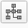

Crear Estructura LADM-COL¶
Para configurar el Asistente LADM-COL, se debe definir cuál modelo se utilizará, el cual será la base para el desarrollo de operaciones que ayuden de forma organizada en el registro y recopilación de información. Para ello es necesario ir al menú de opciones y seleccionar LADM-COL, luego ir a Administración de datos y finalmente a Crear estructura LADM-COL.
Posteriormente se procede a configurar la base de datos donde se almacenará toda la información registrada por el usuario. Para ello se debe dar clic en el botón Configurar conexión.
Inmediatamente el cuadro de diálogo cambiará, solicitando los datos necesarios para desarrollar una conexión a cualquiera de los siguientes gestores de base de datos:
PostgresSQL/PostGIS
GeoPackage
MS SQL Server
Los datos necesarios para definir la conexión son:
Host: localhost
Puerto: 5432
Usuario: postgres
Contraseña: (definida por el usuario al momento de instalar postgres)
Como ejemplo, estos son los datos de conexión de una base de datos de PostgresSQL.
Ahora es necesario crear una base de datos y un esquema. El esquema agrupará toda la información trabajada por el Asistente LADM-COL. Para ello es necesario dar clic al botón Refrescar bases de datos y esquemas.
Para crear la base de datos presiona el botón . De inmediato saldrá un cuadro de diálogo solicitando el nombre a asignar, posterior a ello se debe dar clic en el botón Crear database obteniendo un mensaje de verificación de dicho proceso, finalmente dar clic en el botón Cerrar.
Para la creación del esquema se debe presionar el boton . En el cuadro de diálogo que se despliega, ingresar el nombre a asignar, presionar el botón Crear Shema, y luego el botón Cerrar.
Dar clic en Aceptar para volver al diálogo inicial y finalmente, dar clic en Crear estructura LADM-COL. Una vez terminado el proceso, presionar el botón Cerrar para cerrar el diálogo.
{kind=link}
{kind=link}
{kind=link}
{kind=link}
{kind=link}
{kind=link}
{kind=link}
{kind=link}
{kind=link}